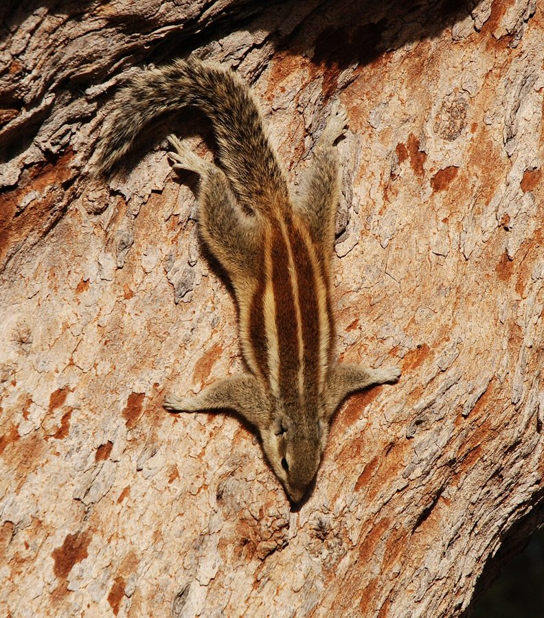

गिलहरीNorthern Palm Squirrel
Funambulus pennantii · Sciuridae · MAM-0004

- Scientific name
- Funambulus pennantii Wroughton, 1905
- Family
- Sciuridae
- Hindi
- गिलहरी / पाँचपट्टा गिलहरी
- Status here
- native
- IUCN
- LC
When to look कब देखें
Present all year.
गिलहरी / Northern Palm Squirrel
Funambulus pennantii Wroughton, 1905 — Sciuridae
गिलहरी पूर्वी UP का सबसे परिचित जंगली स्तनपायी है — हर घर के आँगन में, हर मंदिर में, हर बाग में। पीठ पर पाँच सफेद-क्रीम धारियाँ — जिनकी कहानी रामायण में मिलती है: "राम ने तीन अँगुलियों से गिलहरी की पीठ सहलाई — तब से पाँच धारियाँ।" यह कथा हर बच्चा जानता है। वैज्ञानिक दृष्टि से यह प्रजाति 5 धारियों वाली है — दक्षिण भारत की Funambulus palmarum में सिर्फ 3 धारियाँ होती हैं।
Quick Identification त्वरित पहचान
| Feature | Description |
|---|---|
| Size | Body 13–17 cm; tail 13–15 cm; weight 60–100 g |
| Colour | Brown-grey back with 5 longitudinal cream/white stripes |
| Tail | Bushy; same length as body; held upright while running |
| Face | White eye ring; dark facial stripes |
| Voice | Rapid, high-pitched "chip-chip-chip" alarm call |
| Behaviour | Highly active, jerky movements; freezes then dashes |
Five vs. Three stripes: Funambulus pennantii (northern India, UP) has 5 longitudinal stripes. Funambulus palmarum (South India) has 3 stripes. The Ramayana myth connects to the 5-striped northern species.
Morphology आकारिकी
| Feature | Measurement |
|---|---|
| Head-body length | 13–17 cm |
| Tail length | 13–15 cm |
| Weight | 60–100 g |
Dorsal stripes: Three dark stripes alternate with two pale (white-cream) stripes on each side, creating a total of 5 visible pale stripes on the back. The pattern is consistent and diagnostic.
Fur: Body grey-brown; underside white to pale cream. Feet grey-brown.
Eyes: Large, dark brown; white ring around eye. Good colour vision — important for fruit selection.
Scent glands: In the wrist area — used for marking territories and communication.
Teeth: Rodent dentition — single pair of incisors (continuously growing, yellow-orange), no canines, gap (diastema), then molars. Incisors used to open hard nuts and gnaw through bark. Tail bushy, equal to or slightly shorter than body length; held erect while running; used for balance while climbing.
Ecological Role पारिस्थितिक भूमिका
Seed disperser: Squirrels cache food (scatter-hoard) — burying seeds, nuts, and hard fruits in the ground for later use. Many of these caches are forgotten or the squirrel dies, leaving seeds to germinate. This makes squirrels important seed dispersers for mango, custard apple, peepal, and other tree species.
Fruit and flower feeder: Squirrels consume a wide range of plant material — ripe fruit (mango, guava, custard apple, fig), unripe fruit, flowers (damaging mango flower spikes), seeds, and bark.
Insect and protein supplement: Squirrels regularly consume insects, small bird eggs, and even nestlings. They are not purely vegetarian — this omnivory places them at multiple trophic levels.
Alarm signal: The rapid "chip-chip-chip" call serves as a multi-species alarm signal — when a squirrel calls, other birds and mammals respond and become alert. Mongoose (MAM-0002), mynas (BRD-0006), and other species respond to squirrel alarm calls as if to a direct predator signal.
Prey base: Squirrels are preyed upon by rat snakes (REP-0002), black kites (BRD-0011), Indian Roller (BRD-0003), mongoose (MAM-0002), and jungle cat (MAM-0003).
Life Cycle / Phenology जीवन चक्र
| Month | Event |
|---|---|
| Feb–Mar | First breeding season; nest construction in tree hole or dense branch fork |
| Mar–Apr | 1–5 young born (average 3); naked and blind at birth |
| May | Young emerge; weaned at 6–8 weeks |
| Aug–Sep | Second breeding season (two litters per year) |
| Year-round | Non-breeding adults active; caching behaviour peaks before winter |
| Dec–Jan | Reduced activity; less visible in cold |
Nest: A bulky sphere of dried grass, leaves, and bark shreds, built in a tree hole, dense creeper, or forked branch. Both parents sometimes participate in nest maintenance.
Lifespan: 3–4 years in the wild. High predation pressure on juveniles means many do not survive the first year.
Agricultural / Human Relevance कृषि एवं मानव उपयोग
Orchard damage: A significant orchard pest in eastern UP — damages mango flower panicles (preventing fruit set); bites into unripe fruits; raids custard apple, guava, and litchi before full ripening. The damage is significant enough that orchardists sometimes set traps or use scare devices.
Legal status: Schedule V, Wildlife Protection Act 1972 — designated as a "vermin" species, meaning it can be legally culled if causing crop damage, with notification from the Collector. However, culling is rarely practiced and culturally unpopular given the Ramayana connection.
Ramayana mythology — "Ram ki gilahri": While Ram was building the bridge to Lanka (Setubandha), a small squirrel was helping by carrying sand grains in her fur. Ram stroked the squirrel's back with his three fingers — leaving marks (some versions: five stripes appeared). This story is among the most widely told nature stories in Hindi-speaking India — it gives the squirrel a protected status in popular consciousness even where the legal status is "vermin."
Temple ecosystem: At temple sites throughout eastern UP, squirrels are semi-habituated to humans — fed prasad and grain. They become fearless and entertaining. Temple trees (peepal, banyan) with squirrel populations provide daily wildlife watching for devotees.
Expected Locally स्थानीय रूप से अपेक्षित
Not a field record. Written from published accounts for eastern Uttar Pradesh. No confirmed local sighting yet — if you have seen it, that is what the atlas needs.
अभी तक स्थानीय पुष्टि नहीं। यह विवरण प्रकाशित स्रोतों से है, किसी अवलोकन से नहीं।
The Five-striped Palm Squirrel is extremely common in Basti town and surrounding villages — present in virtually every homestead garden. Abundant at Ayodhya temple complex, where squirrels are fed regularly by devotees and are very tame. Alarm calls are frequently heard, especially when mongoose or snake is nearby — a reliable indirect indicator of snake presence. Mango orchard damage from squirrels is observed in March (flower panicles) and July (unripe fruit gnawing). Activity reduces noticeably in December–January.
Distribution वितरण
Global range: Northwestern Indian subcontinent — India (north and central), Pakistan, Nepal, and Bangladesh. Also introduced to Australia (Western Australia), where it is an invasive species.
In India: Distributed across northern and central India — UP, Rajasthan, Gujarat, Madhya Pradesh, Bihar, Jharkhand, and into the Deccan. Not present in the northeastern states or in the south (replaced there by F. palmarum).
In Uttar Pradesh: Widespread and abundant throughout all districts; present from the Terai foothills to the Gangetic plains.
In Basti district / eastern UP: Common and conspicuous year-round in all homestead gardens, orchards, temple compounds, and roadside trees. Probably the most frequently observed wild mammal in the region.
Research Questions शोध प्रश्न
- What fraction of mango yield loss in eastern UP homestead orchards is attributable to squirrel damage — and is this measurable by comparing orchards with and without deterrents?
- How far do squirrels cache seeds from source trees — and does this create measurable seed dispersal gradients around mango and custard apple trees?
- Do squirrel alarm call rates correlate with rat snake (REP-0002) density in Basti homesteads — can this be used as a cheap snake presence indicator?
- What is the interaction between temple-fed (habituated) squirrel populations and wild woodland squirrel populations in Ayodhya — are they reproductively continuous?
- Is there any measurable effect on squirrel body condition or disease load from feeding on temple prasad (often refined sugar/sweets) compared to wild-diet squirrels?
Similar Species मिलती-जुलती प्रजातियाँ
| Species | How to distinguish |
|---|---|
| Funambulus palmarum (Three-striped Palm Squirrel) | 3 stripes (not 5); South Indian species; not in UP |
| Callosciurus spp. (Giant Squirrels) | Much larger (>30 cm body); forest-dependent; not in UP plains |
| Rattus spp. (Rats) | No stripes; scaly tail; nocturnal; not squirrel-like |
Taxonomy & Classification वर्गीकरण
Original description. Funambulus pennantii was described by Robert Charles Wroughton in 1905 in Journal of the Bombay Natural History Society, 16: 407. The species epithet pennantii honours Thomas Pennant (1726–1798), the Welsh naturalist who wrote early accounts of Indian mammals. The genus Funambulus F. Cuvier, 1833 takes its name from the Latin funambulus (tightrope walker), apt for a squirrel running along slender branches.
Subspecies. Several subspecies are recognised across its range, defined by fur colour and stripe width:
| Subspecies | Range |
|---|---|
| F. p. pennantii | UP, Bihar, Bengal (the nominate subspecies) |
| F. p. argentescens | Pakistan, Rajasthan |
| F. p. badius | Northwestern India |
Family and order placement. Belongs to the order Rodentia, family Sciuridae (squirrels), tribe Funambulini (Asian palm squirrels). The family Sciuridae contains over 280 species of squirrels, marmots, and chipmunks. The genus Funambulus contains five species of palm squirrels, all restricted to South Asia.
Phylogenetic notes. Molecular phylogenetics places the Asian palm squirrels (Funambulus) within the Sciurinae, closely related to Old World tree squirrels. The striped pattern is ancestral within the group — it provides camouflage among dappled light and leaf patterns and may also play a role in social recognition.
IUCN status rationale. Assessed as Least Concern (LC) by the IUCN Red List. Highly adaptable to human-modified landscapes; populations stable or increasing in urban and agricultural zones. Legally "vermin" in India under Schedule V WPA 1972, but no significant conservation threat.
Photo Gallery फ़ोटो गैलरी
Atlas Connections संबंधित प्रजातियाँ
- REP-0002 Indian Rat Snake — significant squirrel predator; squirrel alarm calls indicate snake proximity
- BRD-0011 Black Kite — aerial predator of squirrels
- MAM-0002 Small Indian Mongoose — ground predator; competition for garden ecosystem resources
- FLR-0011 Mango — primary feeding and orchard pest relationship
- FLR-0023 Custard Apple — fruit raider; seed disperser
References सन्दर्भ
- Wroughton, R.C. (1905). Description of new species of Funambulus. Journal of the Bombay Natural History Society, 16: 407.
- Prater, S.H. (1971). The Book of Indian Animals. 3rd ed. Bombay Natural History Society / Oxford University Press.
- Agrawal, V.C. (1966). Taxonomic notes on Funambulus pennantii. Records of the Indian Museum, 62: 77–82.
- Zoological Survey of India. Fauna of Uttar Pradesh — Mammalia. ZSI, Kolkata.
- GBIF Occurrence Data — Funambulus pennantii, India (2026). GBIF taxon key: 2437317.
Source file: species/fauna/mammals/palm_squirrel.md